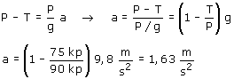

La persona, que pesa 90 kp, no puede quedarse quieta
cogida a la cuerda porque esta se rompería ya que la máxima
tensión que puede soportar es 75 kp
La única solución es dejarse deslizar de forma que
la cuerda con su maxíma tensión frene lo más
posible el descenso:
 |